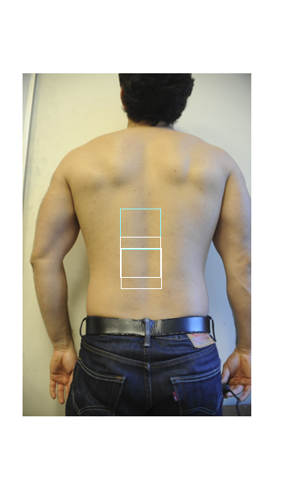
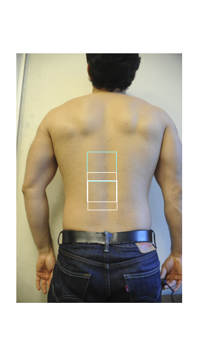

Contents
%
Manual Point Correspondence:
Experiment to test if we can manually select one point for correspondence and then find the matching correspondences across a set of images.
Steps: 1) Given N images, the user selects a point of interest on 1 image 2) Extract features (RGB, possibly SIFT, possibly CNN) from a local patch, and from far-away global patches 3) Scan across a candidate image and try to find the M best matching points. 4) Display the M points
clc clear all close all
Load Images of consideration
% Load source image img_source = '/media/esteva/ExtraDrive1/ThrunResearch/NikonD3Data/4-9-2015/DSC_7971.JPG'; % Source img_source = imresize(imread(img_source), 0.1); % Load target images imgs = { '/media/esteva/ExtraDrive1/ThrunResearch/NikonD3Data/4-9-2015/DSC_7983.JPG' % Target 1 '/media/esteva/ExtraDrive1/ThrunResearch/NikonD3Data/4-11-2015/DSC_7987.JPG' '/media/esteva/ExtraDrive1/ThrunResearch/NikonD3Data/4-6-2015/DSC_7947.JPG' '/media/esteva/ExtraDrive1/ThrunResearch/NikonD3Data/4-1-2015/DSC_7899.JPG' '/media/esteva/ExtraDrive1/ThrunResearch/NikonD3Data/4-6-2015/DSC_7946.JPG' }; imgs = cellfun(@imread, imgs, 'UniformOutput', false); resize = @(x) imresize(x, 0.1); imgs = cellfun(resize, imgs, 'UniformOutput', false);
Display Images
f = figure(1); APos = [0.5 0.5 0.5 0.5]; imshow(img_source) % image number 1 f.set('units', 'normalized', 'outerposition', APos) title('Input Image A - source') for m = 1:length(imgs) figure; imshow(imgs{m}) % f.set('units', 'normalized', 'outerposition', APos) end

Get a Manual Point of interest (from User)
pause(0.1); f = figure(1); imshow(img_source); f.set('units', 'normalized', 'outerposition', APos); title('Input Image A'); [dim2_point, dim1_point] = ginput(1); point = [dim1_point, dim2_point]; pause(0.1);
Extract Top-1 Patches from each target image
display('Scanning') % Get source patch patch_width = 50; % Make this an even number so that in patch there is a center column/row for flipping later (think of convolutions) patch_height = 50; patch = getPatches(point, patch_width, patch_height, img_source); [patch_height, patch_width,~] = size(patch); % Grayscale conversion I1 = rgb2gray(img_source); imgs_gray = cellfun(@rgb2gray, imgs, 'UniformOutput', false); p = rgb2gray(patch); % L2-norm scanning -> Heatmap func = @(X) scan(p,X); hmaps = cellfun(func, imgs_gray, 'UniformOutput', false); % Constrain Heatmap by regional minima hmaps_r = cellfun(@constrainHeatmap, hmaps, 'UniformOutput', false); % Calculate matches in ascending order func = @(X) sort(X(:), 1, 'ascend'); [l2norms, I] = cellfun(func, hmaps_r, 'UniformOutput', false); % Extract correspondence points on images func = @(v, X) [mod(v(1), size(X,1)), floor( v(1) / size(X,1) )]; point_found_hmapr = cellfun(func, I, hmaps_r,'UniformOutput', false); func = @(v) round(v + size(p)/2); point_found =cellfun(func, point_found_hmapr,'UniformOutput', false); % Matched Patches func = @(pt, im) getPatches(pt, patch_width, patch_height, im); matched_patches = cellfun(func, point_found, imgs, 'UniformOutput', false); display('Patches Extracted')
Scanning Patches Extracted
Display Patches - Singles
numpatches = length(matched_patches)+1; figure; imshow(imresize(patch, [300 300])); title('Original') for i = 1:numpatches-1 figure; imshow(imresize(matched_patches{i}, [300 300])); end % %% Display Patches - Stacked % numpatches = length(matched_patches)+1; % % f = figure; % LPos = [0.0 0.0 0.5 1.0]; % f.set('units', 'normalized', 'outerposition', LPos) % subplot(numpatches,1,1); imshow(patch); % title('Original') % for i = 1:numpatches-1 % subplot(numpatches,1,1+i); % imshow(matched_patches{i}); % end
Display Boxes Images - Singles - Top N Patches
numimgs = length(imgs)+1; N=3; f = figure; colour = uint8([255 0 0 ]); % [R G B]; class of colour must match class of I rectangle = int32([point(2:-1:1) - [patch_width/2 patch_height/2], patch_width, patch_height]); shapeInserter = vision.ShapeInserter('BorderColor','Custom','CustomBorderColor',colour); J = step(shapeInserter, img_source, rectangle); imshow(J); for i = 1:numimgs-1 colour = uint8([0 255 255]); % [R G B]; class of colour must match class of I J = imgs{i}; for j = 1:N % Convert heatmap index to points on images pf_hampr= [mod(I{i}(j), size(hmaps_r{i},1)), floor( I{i}(j) / size(hmaps_r{i},1) )]; pf = round(pf_hampr + size(p)/2); % Patch found % topNpatches{end+1} = getPatches(pf, patch_width, patch_height, imgs{i}); % First correspondence is cyan, the rest are white if(j == 1) colour = uint8([0 255 255]); % [R G B]; class of colour must match class of I else colour = uint8([255 255 255]); % [R G B]; class of colour must match class of I end % Overlay Rectangle of specified color rectangle = int32([pf(2:-1:1) - [patch_width/2 patch_height/2], patch_width, patch_height]); shapeInserter = vision.ShapeInserter('BorderColor','Custom','CustomBorderColor',colour); J = step(shapeInserter, J, rectangle); end figure; imshow(J); end % %% Display Boxes Images - Stacked % numimgs = length(imgs)+1; % f = figure; % LPos = [0.0 0.0 0.5 1.0]; % f.set('units', 'normalized', 'outerposition', LPos) % subplot(numimgs,1,1); imshow(img_source); % for i = 1:numimgs-1 % colour = uint8([0 255 255]); % [R G B]; class of colour must match class of I % % % Overlay Rectangle of specified color % pf = point_found{i}; % rectangle = int32([pf(2:-1:1) - [patch_width/2 patch_height/2], patch_width, patch_height]); % shapeInserter = vision.ShapeInserter('BorderColor','Custom','CustomBorderColor',colour); % J = step(shapeInserter, imgs{i}, rectangle); % subplot(numimgs,1,1+i); % imshow(J); % end

 
 
Create Movie & Save it
% Scale up and slow down newsize = [500 500]; slowdown = 10;
% Source patch resized p = imresize(patch, newsize);
clear writerObj writerObj = VideoWriter('registration.avi'); writerObj.FrameRate = 1; open(writerObj);
figure; imshow(p); axis tight set(gca,'nextplot','replacechildren'); set(gcf,'Renderer','zbuffer'); frame = getframe; drawnow writeVideo(writerObj, frame);
for i = 1:length(matched_patches) mp = imresize(matched_patches{i}, newsize); clf imshow(mp); axis tight set(gca,'nextplot','replacechildren'); set(gcf,'Renderer','zbuffer'); drawnow frame = getframe;
writeVideo(writerObj, frame); end
close(writerObj);